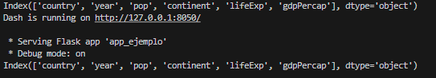
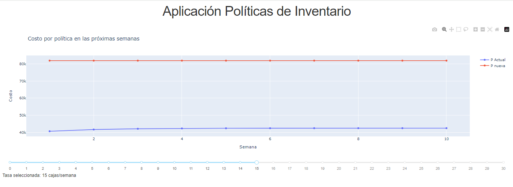
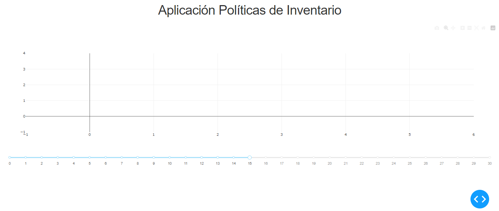

Complementaria 5: Introducción a Dash
#
Este es un tutorial para construir un tablero web con funcionalidades básicas usando el paquete dash del software Python.
Ejemplo de una aplicación Dashboard
En Bloque Neón descargue el archivo app_ejemplo.py, abralo en VSCode y ejecutelo. El programa abrirá el terminar, donde se ejecutará el siguiente comando: 
Una vez ejecutado el archivo, en su navegador de preferencia (Chrome, Firefox, Safari, Edge) visite el servidor local usando el puerto 8050, es decir, vaya a la página:
Dentro del archivo app_ejemplo.py se pueden identificar múltiples elementos. El primero es un enlace de estilos CSS que permitirá construir la herramienta Dashboard y se guarda en la variable external_stylesheets. También se puede identificar al objeto app, del cual se extrae el atributo server. Adicionalmente, se cuenta con una función app.layout donde se agregan elementos como deslizadores (dcc.Slider()) y gráficas (dcc.Graph()) , es decir, donde se describe la interfaz gráfica de la aplicación. Finalmente, se cuenta con una función update_figure que junto al decorador app.Callback() , va a actualizar la información de la gráfica de forma automática cuando el usuario interactúe con el deslizador.
Aplicación Políticas de Inventario en una fábrica de papel
En esta parte, se desea construir una herramienta que permita evaluar los costos de dos políticas de inventario consideradas por una fábrica de resmas de papel.
Creación de interfaz gráfica
Se desea construir una interfaz donde se muestre un panel interactivo en el que el usuario pueda variar los parámetros del análisis (en este caso la tasa de la demanda de resmas de papel), y una gráfica con este análisis (el costo total en el que incurre la empresa por políticas de inventario). Para esto, se hará uso de un deslizador (dcc.Slider), descrito con anterioridad, que se mostrará en la parte lateral izquierda de la página y una gráfica que será el contenido principal en la página.
El resultado final debería ser:

Para crear una nueva aplicación Dashboard:
Hacer click en la pestaña File
Seleccionar la opción New File
Seleccionar Python File
Se recomienda guardar el archivo en una nueva carpeta a la que usted tenga fácil acceso.
En el nuevo archivo en blanco, primero se hace la importación de las librerías necesarias. Recuerde que debe tener instaladas las librerías en su computador, en caso de no contar con ellas acceda a su terminal e instale las librerías necesarias con el comando pip install
#Librerías para ejecutar el dash
import dash
from dash import dcc # dash core components
from dash import html # dash html components
from dash.dependencies import Input, Output
#Librería para graficar
import plotly.graph_objs as go
Posteriormente, se guarda el enlace a la hoja de estilos CSS, y se crea el objeto app:
#Enlace a la hoja de estilos CSS y permite construir la herramiente Dash
external_stylesheets = ['https://codepen.io/chriddyp/pen/bWLwgP.css']
#Se crea el objeto app, dentro del cual se extrae el atributo server
app = dash.Dash(__name__, external_stylesheets=external_stylesheets)
server = app.server
Procedemos a realizar el diseño de la interfaz. Se ubica un deslizador que permita seleccionar el valor del parámetro de la demanda. El layout del tablero, descrito por el objeto app.layout, se muestra a continuación:
# Definir la interfaz de la aplicación
app.layout = html.Div([
# titulo de la aplicación
html.H1('Aplicación Políticas de Inventario', style={'textAlign': 'center'}),
#Se realiza la división de recuadros entre el título y los demás objetos
html.Div([
#imprimir gráfica de costos
dcc.Graph(id='Graf_Cost_Tot'),
#Crear objeto para ingresar parametro de tasa de demanda con un control deslizante
dcc.Slider(
id = 'TasaDemanda',
min = 0,
max = 30,
value = 15,
step = 1
),
#Crear objeto para especificar la tasa seleccionada por el usuario y las unidades
html.Div(id='valorSlider')
])
])
Debajo de la función app.layout, se debe incorporar el siguiente comando de ejecución de la aplicación el cual permitirá iniciar un servidor y por lo tanto, lanzar nuestra herramienta Dash
if __name__ == '__main__':
app.run_server(debug=True)
La aplicación en este momento debería verse así: 
Creación de la lógica de aplicación
Hasta el momento, se tiene el esqueleto de una interfaz. Sin embargo, para que esta realice cualquier acción, se requiere la incorporación de funciones que con ayuda del decorador @app.callback actualicen la aplicación. Dentro del decorador se van a ingresar todos los Outputs o salidas que se desean actualizar a partir de los Inputs o entradas que se ven modificadas. Para esto se va a crear la nueva función update_graph donde se definirá la lógica que estará por debajo de la generación de las gráficas de la evolución de costos de cada política durante 10 semanas. Lo anterior se puede realizar de dos maneras:
Implementando directamente en el server todo el código necesario.
Implementando funciones en un documento de Python (.py) aparte, que serán llamadas dentro de la función update_fig de acuerdo a los requerimientos necesarios, ejecutando el código de dicho script, en lo posible, solo una vez.
Con base en las dos anteriores formas de implementación del código, en el presente tutorial se seguirá la segunda metodología.
Nota: Se recomienda realizar sus aplicativos de Dashboard siguiendo la segunda metodología, puesto que, si se sigue la primera propuesta, en el caso de presentarse múltiples outputs, la ejecución del código puede ser ineficiente. Lo anterior, debido a que para cada uno de estos outputs, debe ejecutarse el mismo código.
Volviendo al ejemplo de la fábrica de resmas de papel, se deben implementar, en un nuevo script .py, dos modelos de cadena de Markov de tiempo discreto, uno para cada política de inventario. A partir de estos modelos, se estimarán los costos requeridos usando análisis transitorio. Es importante denotar que dicho script debe ser guardado dentro de la carpeta resultante al crear el aplicativo de Dashboard.
Para calcular las probabilidades de transición de la anteriores cadenas de Markov, se debe tener en cuenta que la demanda semanal se distribuye Poisson. Para calcular las probabilidades de Poisson, se utiliza la librería scipy.stats, específicamente la clase poisson. Esta clase tiene como parámetros el valor de k y de \(\lambda\).
Si se quiere obtener la probabilidad puntual, se utiliza la función
poisson.pmf(), que es equivalente a realizar el cálculo $\(P(X=k) = \frac{e^{-\lambda} \cdot (\lambda)^{k}}{k!}.\)$Si queremos calcular el valor de la probabilidad acumulada, utilizamos la función
poisson.cdf(), la cual calcula $\(P(X\leq k) = \sum_{i=0}^{k} \frac{e^{-\lambda} \cdot (\lambda)^{k}}{k!}.\)$Si queremos calcular la probabilidad acumulada de cola derecha utilizamos la función
poisson.sf(), la cual calcula $\(P(X> k).\)$
Estas dos funciones descritas anteriormente se utilizarán más adelante para llenar las matrices de probabilidades de transición de los dos modelos.
A continuación, se desarrolla un nuevo script de python, que llamaremos “Funciones.py”.
Antes de escribir cualquier cosa, se deben cargar (y de ser necesario, instalar) las librerías pandas, numpy, jmarkov (específicamente la clase dtmc para cadenas discretas) y scipy.stats (específicamente la clase poisson).
#Librerías que vamos a utilizar
## Recuerde hacer pip install en el cmd si no ha instalado alguna de ellas
import pandas as pd
import numpy as np
from scipy.stats import poisson
from jmarkov.dtmc import dtmc
Ahora, se escribe una función donde se implementa el código necesario para los dos modelos ya mencionados, calcular los costos semanales y, a partir de esto, generar una gráfica que represente la evolución de tales costos en las próximas 10 semanas. Dicha función recibe como parámetro un objeto “tasa” que representará la tasa de la demanda semanal, la cual variaremos desde el app.layout.
# Crear la función que realice los procedimientos necesarios.
# En este caso se busca crear los objetos cadenas de markov para ambas políticas,
# realizar el análisis transitorio para las 10 semanas y obtener los respectivos costos
def Shiny_function(tasa):
#Crear los estados
estados = range(23)
#*****Crear y llenar la matriz P de la política actual*****
matrizP = np.zeros((len(estados), len(estados)), dtype = float)
#Para la Política Actual -> si i<=10 solicita 12 resmas
for i in estados:
for j in estados:
if i<=10 and j>0:
matrizP[i,j] = poisson.pmf(12+i-j, tasa) #poisson.pmf calcula P(D=k)
elif i<=10 and j==0:
matrizP[i,j] = poisson.sf(12+i-1, tasa) # poisson.smf calcula P(D>k).
# Por esto es necesario restar 1 unidad.
elif i>10 and j>0:
matrizP[i,j] = poisson.pmf(i-j, tasa)
elif i>10 and j==0:
matrizP[i,j] = poisson.sf(i-1, tasa)
#Crear y llenar la matriz P para el caso de la Política Nueva
matrizPNueva = np.zeros((len(estados), len(estados)), dtype = float)
#Para la nueva Política -> solicitar hasta la capacidad máxima
for i in estados:
for j in estados:
if j>0:
matrizPNueva[i,j] = poisson.pmf(22-j, tasa)
elif j==0:
matrizPNueva[i,j] = poisson.sf(21, tasa)
#Crear las dos cadenas usando el paquete jmarkov
# Política Actual
politica_Actual = dtmc(matrizP)
# Política Nueva
politica_Nueva = dtmc(matrizPNueva)
# Valor de los costos de inventario y de ordenar
cInventario = 6200
cOrdenar = 38000
# Estimar los costos para las próximas 10 semanas
# Definir vector de estado inicial dado que al final de esta semana quedaron cero unidades en inventario
alfa = np.zeros(len(estados))
alfa[0] = 1
# Calcula el vector de costos de la política actual
cost_Sem_Pactual = []
# Calcula el costo de inventario y el costo de ordenar promedio de la política actual
cost_inv_Pactual = []
cost_ord_Pactual = []
for i in range(1,11):
probs = politica_Actual.transient_probabilities(n = i, alpha=alfa)
print(cInventario * np.dot(probs, estados))
cost_inv_Pactual.append(cInventario * np.dot(probs, estados))
cost_ord_Pactual.append(cOrdenar*sum(probs[0:10]))
cost_Sem_Pactual = np.add(cost_inv_Pactual, cost_ord_Pactual)
# Calcula el vector de costos de la política nueva
cost_Sem_Pnueva = []
# Calcula el costo de inventario y el costo de ordenar promedio de la política nueva
cost_inv_Pnueva = []
cost_ord_Pnueva = []
for i in range(1,11):
probs = politica_Nueva.transient_probabilities(n = i, alpha=alfa)
cost_inv_Pnueva.append(cInventario * np.dot(probs, estados))
cost_ord_Pnueva.append(cOrdenar*sum(probs[0:21]))
cost_Sem_Pnueva = np.add(cost_inv_Pnueva, cost_ord_Pnueva)
# Vector de número de semana
num_sem = range(1,11)
data = pd.DataFrame({
'numero_semana': num_sem,
'costo_semanal_PolActual': cost_Sem_Pactual,
'costo_semanal_PolNueva': cost_Sem_Pnueva
})
return data
Por ende, si se observan las últimas líneas de la anterior función, es posible determinar que el valor que ésta retorna es un DataFrame, el cual se recupera en el server, como se muestra a continuación.
Primero, se debe vincular el aplicativo de Dashboard al script de Python que se desea utilizar como fuente. Para esto, se hace uso from, el cual se define antes del enlace a la hoja de estilos CSS.
#Librerías para ejecutar el dash
import dash
from dash import dcc # dash core components
from dash import html # dash html components
from dash.dependencies import Input, Output
#Librería para graficar
import plotly.graph_objs as go
#Este comando importa todas las funciones del archivo Funciones.py (debe encontrarse en la misma carpeta que el Dashboard)
## El archivo Funciones.py incluye la función donde anteriormente obteniamos los costos para las 10 semanas.
from Funciones import *
#Enlace a la hoja de estilos CSS y permite construir la herramiente Dash
external_stylesheets = ['https://codepen.io/chriddyp/pen/bWLwgP.css']
#Se crea el objeto app, dentro del cual se extrae el atributo server
app = dash.Dash(__name__, external_stylesheets=external_stylesheets)
server = app.server
Ahora, agregaremos la función @app.callback ENTRE la función app.layout y el comando de ejecución de la aplicación que lanza la herramienta Dash.
Recordatorio: el comando de ejecución de la aplicación es el siguiente:
if __name__ == '__main__':
app.run_server(debug=True)
Luego, debe llamarse la funcion dash_function() que se encuentra en el archivo “Funciones.py”. La gráfica resultante se renderiza usando la clase go de la librería plotly.graph_objs.
@app.callback(
# Outputs que se van a modificar cuando el usuario interactua
[Output('Graf_Cost_Tot', 'figure'),
Output('valorSlider', 'children')],
# Input en el que se va a fijar el callback
[Input('TasaDemanda', 'value')])
def update_graph(Tasa):
# Importamos la información de la funcion en Funciones.py
InfoCostos = dash_function(Tasa)
#__________Generar gráfica de los costos para las próximas 10 semanas__________
# cada variable trace guardada es una nueva curva a la gráfica
trace1 = go.Scatter(
x=InfoCostos['numero_semana'],
y=InfoCostos['costo_semanal_PolActual'],
mode='lines+markers',
name='P Actual'
)
trace2 = go.Scatter(
x=InfoCostos['numero_semana'],
y=InfoCostos['costo_semanal_PolNueva'],
mode='lines+markers',
name='P nueva'
)
layout = go.Layout(
title='Costo por política en las próximas semanas',
xaxis=dict(title='Semana'),
yaxis=dict(title='Costo')
)
fig = go.Figure(data=[trace1, trace2], layout=layout)
return fig, f'Tasa seleccionada: {Tasa} cajas/semana'
Cabe resaltar que el objeto de salida Graf_Cost_Tot fue registrado en la función app.layout, para indicar qué tipo de objeto era (un gráfico de plotly en este caso) y en qué lugar de la interfaz debería aparecer este objeto. Mientras que en la función update_fig se define cómo renderizar este objeto gráfico. Puesto que se quiere que este gráfico cambie dinámicamente dependiendo del valor de la tasa de demanda que el usuario ingrese en la aplicación, al renderizar este objeto se debe incluir el parámetro TasaDemanda, el cual será ingresado como parámetro en la función Shiny_function(), la cual retorna un data frame que se guardará en una variable llamada “InfoCostos”. Se debe tener en cuenta que TasaDemanda es el inputId del objeto de entrada de la tasa de demanda y fue definido en la funcion app.layout. Para ejecutar el aplicativo Dashboard se hacer click en el botón “Run Python File” (triángulo en la esquina superior derecha), lo cual abrirá el terminal, luego, en su navegador (Chrome, Firefox, Safari, Edge) visite el servidor local usando el puerto 8050, es decir, vaya a la página:
Click aquí para ver el código completo del archivo Funciones.py
# Script donde se llevaran a cabo todas las funciones
# Librerías que vamos a utilizar
# Recuerde emplear pip install en una terminal si no ha instalado alguna de ellas
import pandas as pd
import numpy as np
from scipy.stats import poisson
from jmarkov.dtmc import dtmc
# Crear la función que realice los procedimientos necesarios.
# En este caso se busca crear los objetos cadenas de markov para ambas políticas,
# realizar el análisis transitorio para las 10 semanas y obtener los respectivos costos
def dash_function(tasa):
# Crear los estados
estados = range(23)
# Crear y llenar la matriz P de la política actual
matrizP = np.zeros((len(estados), len(estados)), dtype = float)
# Para la Política Actual -> si i<=10 solicita 12 resmas
for i in estados:
for j in estados:
if i<=10 and j>0:
matrizP[i,j] = poisson.pmf(12+i-j, tasa) #poisson.pmf calcula P(D=k)
elif i<=10 and j==0:
matrizP[i,j] = poisson.sf(12+i-1, tasa) #poisson.smf calcula P(D>k). Por esto es necesario restar 1 unidad.
elif i>10 and j>0:
matrizP[i,j] = poisson.pmf(i-j, tasa)
elif i>10 and j==0:
matrizP[i,j] = poisson.sf(i-1, tasa)
# Crear y llenar la matriz P para el caso de la Política Nueva
matrizPNueva = np.zeros((len(estados), len(estados)), dtype = float)
# Para la nueva Política -> solicitar hasta la capacidad máxima
for i in estados:
for j in estados:
if j>0:
matrizPNueva[i,j] = poisson.pmf(22-j, tasa)
elif j==0:
matrizPNueva[i,j]=poisson.sf(21, tasa)
# Crear las dos cadenas usando el paquete jmarkov
# Política Actual
politica_Actual = dtmc(matrizP)
# Política Nueva
politica_Nueva = dtmc(matrizPNueva)
# Valor de los costos de inventario y de ordenar
cInventario = 6200
cOrdenar = 38000
# Estimar los costos para las próximas 10 semanas
# Definir vector de estado inicial dado que al final de esta semana quedaron cero unidades en inventario
alfa = np.zeros(len(estados))
alfa[0] = 1
# Calcula el vector de costos de la política actual
cost_Sem_Pactual = []
# Calcula el costo de inventario y el costo de ordenar promedio de la política actual
cost_inv_Pactual = []
cost_ord_Pactual = []
for i in range(1,11):
probs = politica_Actual.transient_probabilities(n = i, alpha=alfa)
print(cInventario * np.dot(probs, estados))
cost_inv_Pactual.append(cInventario * np.dot(probs, estados))
cost_ord_Pactual.append(cOrdenar*sum(probs[0:10]))
print(cost_inv_Pactual)
print(cost_ord_Pactual)
cost_Sem_Pactual = np.add(cost_inv_Pactual, cost_ord_Pactual)
# Calcula el vector de costos de la política nueva
cost_Sem_Pnueva = []
# Calcula el costo de inventario y el costo de ordenar promedio de la política nueva
cost_inv_Pnueva = []
cost_ord_Pnueva = []
for i in range(1,11):
probs = politica_Nueva.transient_probabilities(n = i, alpha=alfa)
cost_inv_Pnueva.append(cInventario * np.dot(probs, estados))
cost_ord_Pnueva.append(cOrdenar*sum(probs[0:21]))
cost_Sem_Pnueva = np.add(cost_inv_Pnueva, cost_ord_Pnueva)
# Vector de numero de semana
num_sem = range(1,11)
data = pd.DataFrame({
'numero_semana': num_sem,
'costo_semanal_PolActual': cost_Sem_Pactual,
'costo_semanal_PolNueva': cost_Sem_Pnueva
})
return data
Click aquí para ver el código completo del Dashboard
# Librerías para ejecutar el dash
import dash
from dash import dcc # dash core components
from dash import html # dash html components
from dash.dependencies import Input, Output
# Librería para graficar
import plotly.graph_objs as go
# Este comando importa todas las funciones del archivo Funciones.py
# El archivo Funciones.py se debe encontrar en la misma carpeta que este documento.
from Funciones import *
# Enlace a la hoja de estilos CSS y permite construir la herramiente Dash
external_stylesheets = ['https://codepen.io/chriddyp/pen/bWLwgP.css']
# Se crea el objeto app, dentro del cual se extrae el atributo server
app = dash.Dash(__name__, external_stylesheets=external_stylesheets)
server = app.server
# Definir la interfaz de la aplicación
app.layout = html.Div([
# Titulo de la aplicación
html.H1('Aplicación Políticas de Inventario', style={'textAlign': 'center'}),
# Se realiza la división de recuadros entre el título y los demás objetos
html.Div([
# Imprimir gráfica de costos
dcc.Graph(id='Graf_Cost_Tot'),
# Crear objeto para ingresar parametro de tasa de demanda con un control deslizante
dcc.Slider(
id = 'TasaDemanda',
min = 0,
max = 30,
value = 15,
step = 1
),
# Crear objeto para especificar la tasa seleccionada por el usuario y las unidades
html.Div(id='valorSlider')
])
])
@app.callback(
# Outputs que se van a modificar cuando el usuario interactua
[Output('Graf_Cost_Tot', 'figure'),
Output('valorSlider', 'children')],
# Input en el que se va a fijar el callback
[Input('TasaDemanda', 'value')])
def update_graph(Tasa):
# Importamos la información de la funcion en Funciones.py
InfoCostos = dash_function(Tasa)
#__________Generar gráfica de los costos para las próximas 10 semanas__________
# cada variable trace guardada es una nueva curva a la gráfica
trace1 = go.Scatter(
x=InfoCostos['numero_semana'],
y=InfoCostos['costo_semanal_PolActual'],
mode='lines+markers',
name='P Actual'
)
trace2 = go.Scatter(
x=InfoCostos['numero_semana'],
y=InfoCostos['costo_semanal_PolNueva'],
mode='lines+markers',
name='P nueva'
)
layout = go.Layout(
title='Costo por política en las próximas semanas',
xaxis=dict(title='Semana'),
yaxis=dict(title='Costo')
)
fig = go.Figure(data=[trace1, trace2], layout=layout)
return fig, f'Tasa seleccionada: {Tasa} cajas/semana'
if __name__ == '__main__':
app.run_server(debug=True)